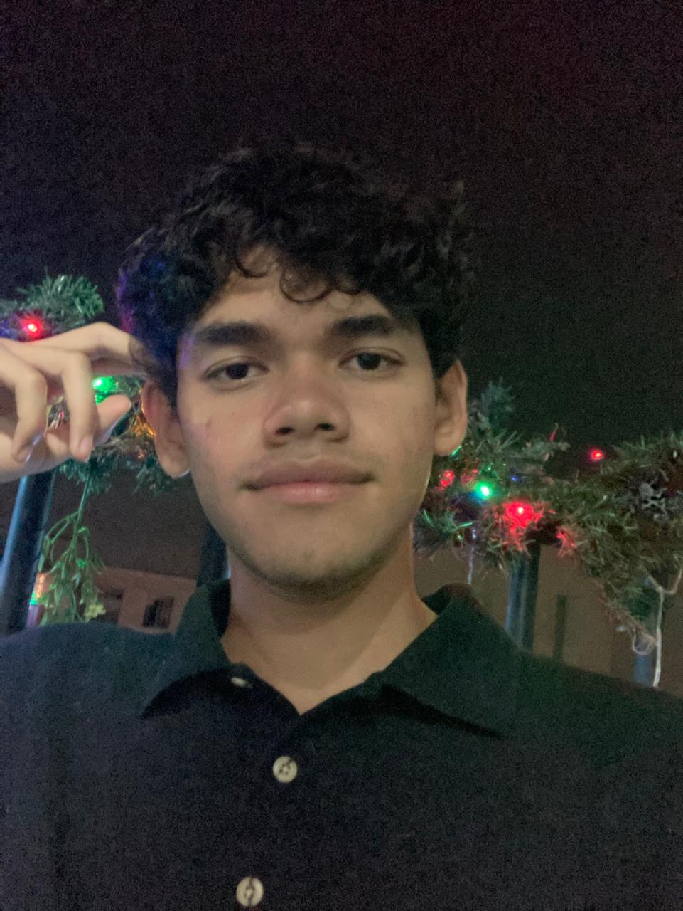

Mario Carvajal | WWD 130
Hello, my name is Mario Carvajal, and I hail from Jamundí, Colombia. At 18 years old, I find joy in playing volleyball during my free time. I am thrilled to embark on this course and grateful for the opportunity to be part of BYU Pathway. Jamundí, nestled in Valle del Cauca, has transformed from a small, close-knit town into a burgeoning municipality. Despite its growth, the sense of community remains strong, fostering a supportive environment where neighbors feel like family. Joining BYU Pathway is a significant step for me. It allows me to pursue my academic interests while preparing for future endeavors. I am determined to make the most of this experience, eager to learn and grow both personally and professionally. Thank you for taking the time to learn a bit about me. I look forward to the opportunities ahead and am committed to making a positive impact wherever life takes me.